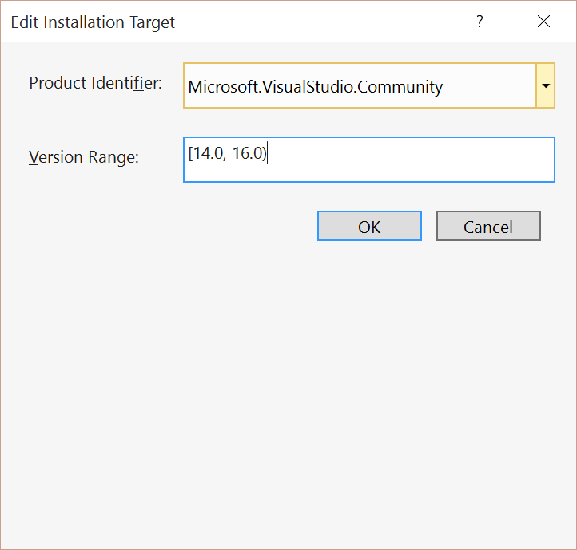
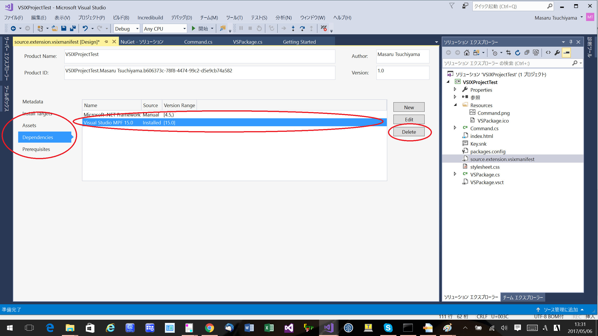
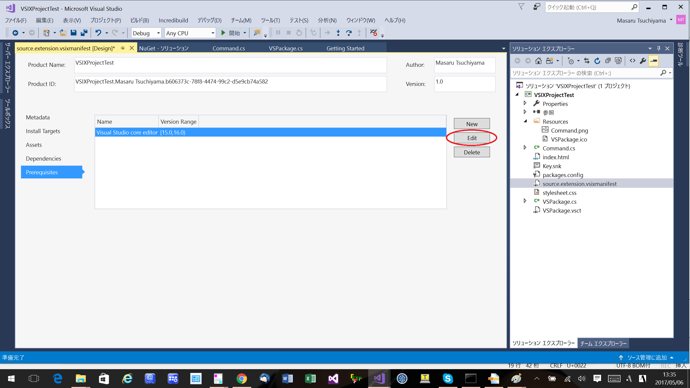
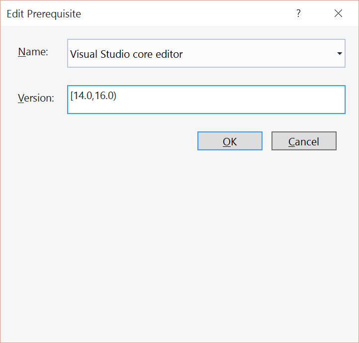
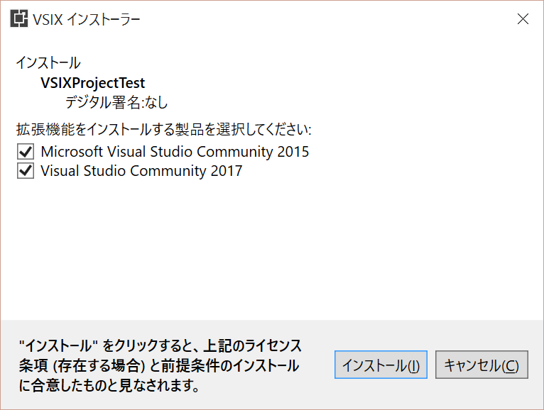
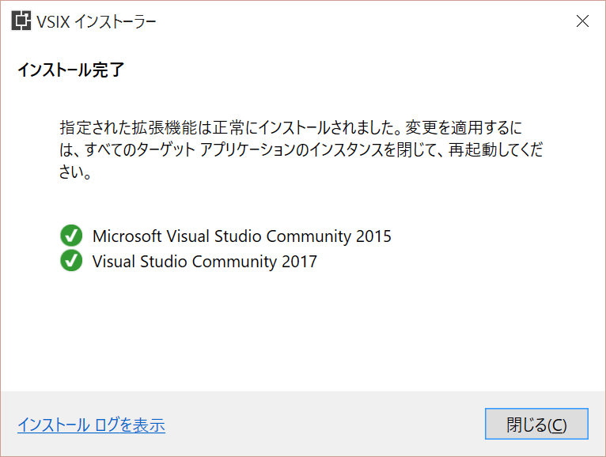
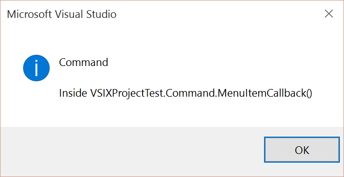

Edit 画面で Version Range で [14.0, 16.0) を設定し、OK を押す
14 = Visual Studio 2015
15 = Visual Studio 2017
16 = Visual Studio 2017 の次のバージョン
[ はこのバージョンを含むという意味で ) はこのバージョンを含まないという意味です。
このため Visual Studio 2015 と Visual Studio 2017 が対象という意味になります。

Dependencies
Dependencies タブを選び、Visual Studio MPF 15.0 を選び、Delete を選ぶ

Prerequisites
Prerequisites タブを選び、Edit を選ぶ

Edit 画面で Version Range で [14.0, 16.0) を設定し、OK を押す

ビルド
ソリューションのビルドを行います。
デバッグ
Visual Studio 2017 でビルドして、Visual Studio 2017 でデバックするやり方はわかるが、
Visual Studio 2015 でデバッグ起動するやり方がわからない。
デバッグタブで Visual Studio 2015 の devenv.exe のパスを指定しただけではプラグインは認識されなかった。
インストール
Visual Studio をすべて閉じて、vsix ファイルをダブルクリックします
そうすると以下のように Visual Studio 2015 と Visual Studio 2017 のどちらにインストールするか確認する画面がでます
両方にインストールします。(そのままインストールボタンを押します)

以下のようにインストールに成功したというメッセージが表示されます。

動作確認
Visual Studio を起動してツールメニュー -> Invoke Command を選びます。
Visual Studio 2015 での表示
